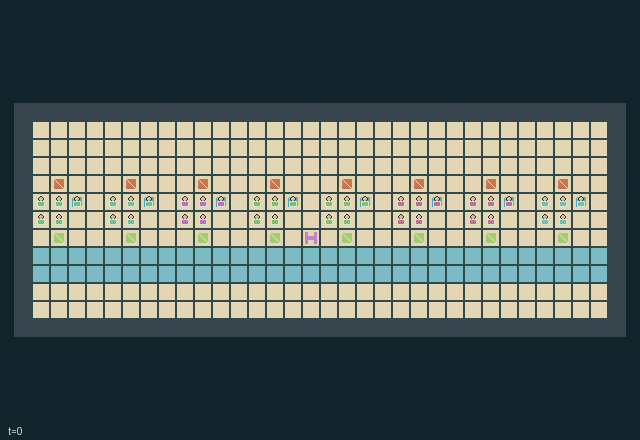

GI223 · Harbor Banquet

Complete at least one fish-and-stew feast at every kitchen; optional single meals compete for dishes, trays and return boats.
Identity and original contract
40 independently actionable roles; 18 discrete commands per role; 576 native observation columns per role; original horizon 512 steps. Declared per-step reward range: -1 to 4. Observation regime: partially_observable.
Source SHA-256: 68f262f8c70e0e968bab3398c6503b1d266760238e921a9c36cd700b8826328e
The objective, rewards, population, map and horizon remain original. A preview is not a success claim.
Objective and gameplay
Complete at least one fish-and-stew feast at every kitchen; optional single meals compete for dishes, trays and return boats.
Complementary station specialties require spatial transfer of ingredients or cooked dishes. Cooking consumes fuel, creates mess and takes four ticks. A tray is tied up in a physical return boat until a crew unloads it; one shared blockage and diversion affect all boats.
- 40 workers in eight kitchens. Item codes: 0 empty, 1 raw fish, 2 vegetables, 3 cooked fish, 4 stew, 5 fuel crate, 6 spoiled dish.
- Cook tool 1 starts only matching raw food at a compatible station. Fuel is consumed; four ticks finish a dish and add mess.
- Pick up cooked output before 12 ticks. Carried dishes cool after 16 ticks; adjacent handoffs preserve remaining warmth.
- Serve either cooked dish locally, or contribute one of each to a composite feast. The first feast component reserves a tray for up to 24 ticks.
- A completed service launches that kitchen's return boat. It must travel a full 32-cell circuit and be unloaded near its actual location before its tray is reused.
- The junction diverts boats around recurring flotsam. Engineer tool 4 can clear the shared blockage; boats cannot move into occupied boat cells.
- Dock deliveries replace remaining dock cargo every 32 ticks, at most eight times. Assortments alternate between the two ingredients and fuel.
- Cycle tools at your home table. Each kitchen completing one composite feast ends the episode; single dishes remain an alternative use of scarce equipment.
Ending: Natural completion when every table has feasts >= 1; otherwise truncate at 512.
What this game explores
Resource commons & externalities: An action changes a persistent resource or burden that another role also encounters. Compare extraction with maintenance and record the downstream resource trajectory.
Complementary production & service: A useful outcome requires ordered stages, scarce equipment or another role's capability. Measure real completed products and resource circulation rather than counting intermediate actions as success.
Joint transport & shared access: Positions, load geometry, occupancy and persistent access constrain whose action can succeed next. Distinguish physical handoff, shared controls and simultaneous force from a cosmetic cooperation label.
These are questions supported by rule structure, not observed learning effects.
Play it: operating walkthrough
crucibles play --game gi223Keep Python running and open its printed address. Select this game, set a seed and press Create session. The game itself is always English.
Assign a role range to Host with Assign / take over, or Assign all roles. Invite a second participant with Create player invitation, then assign a disjoint subset. Every original role is available.
For every owned role choose a legal command and press Queue. Arrow keys / WASD queue a declared directional action for the current role camera when available. Space or Advance one joint step advances everyone together. Non-directional games use the selectors.
Unqueued roles use the labelled untrained uniform-legal policy. Take over or release roles before the next step without resetting. Full-state debug is privileged and permanently logged; role cameras preserve permissions. Close the session to retain logs. Server restart does not restore sessions.
Complete command reference
IDs and English labels exactly match the manifest. Availability depends on role, resources, location and phase. An available action can still have no productive effect.
0·Wait
1·Face or move north
2·Face or move east
3·Face or move south
4·Face or move west
5·Take one dock ingredient
6·Start compatible cooking with cook tool
7·Take station dish
8·Serve local dish on tray
9·Clean adjacent station
10·Toggle channel diversion
11·Clear channel with engineer
12·Refuel station using fuel crate
13·Discard carried item
14·Pass item to nearest empty-handed actor
15·Contribute dish to composite feast
16·Unload returned tray boat
17·Cycle tool at home table
Roles and capability identifiers
These original role names describe capabilities, not interchangeable skins. Check each owned role's legal selector before planning handoffs.
agent_0·crew 0 / initial preparer / actor 0
agent_1·crew 0 / initial cook / actor 1
agent_2·crew 0 / initial carrier / actor 2
agent_3·crew 0 / initial steward / actor 3
agent_4·crew 0 / initial dock engineer / actor 4
agent_5·crew 1 / initial preparer / actor 5
agent_6·crew 1 / initial cook / actor 6
agent_7·crew 1 / initial carrier / actor 7
agent_8·crew 1 / initial steward / actor 8
agent_9·crew 1 / initial dock engineer / actor 9
agent_10·crew 2 / initial preparer / actor 10
agent_11·crew 2 / initial cook / actor 11
agent_12·crew 2 / initial carrier / actor 12
agent_13·crew 2 / initial steward / actor 13
agent_14·crew 2 / initial dock engineer / actor 14
agent_15·crew 3 / initial preparer / actor 15
agent_16·crew 3 / initial cook / actor 16
agent_17·crew 3 / initial carrier / actor 17
agent_18·crew 3 / initial steward / actor 18
agent_19·crew 3 / initial dock engineer / actor 19
agent_20·crew 4 / initial preparer / actor 20
agent_21·crew 4 / initial cook / actor 21
agent_22·crew 4 / initial carrier / actor 22
agent_23·crew 4 / initial steward / actor 23
agent_24·crew 4 / initial dock engineer / actor 24
agent_25·crew 5 / initial preparer / actor 25
agent_26·crew 5 / initial cook / actor 26
agent_27·crew 5 / initial carrier / actor 27
agent_28·crew 5 / initial steward / actor 28
agent_29·crew 5 / initial dock engineer / actor 29
agent_30·crew 6 / initial preparer / actor 30
agent_31·crew 6 / initial cook / actor 31
agent_32·crew 6 / initial carrier / actor 32
agent_33·crew 6 / initial steward / actor 33
agent_34·crew 6 / initial dock engineer / actor 34
agent_35·crew 7 / initial preparer / actor 35
agent_36·crew 7 / initial cook / actor 36
agent_37·crew 7 / initial carrier / actor 37
agent_38·crew 7 / initial steward / actor 38
agent_39·crew 7 / initial dock engineer / actor 39
Information and observation permissions
Self fields and declared public counters/charts are exact. For each entity slot, visibility is active AND Chebyshev distance <= 3 from the role's current position; hidden slots have visible=0 and all values zero. Actor slots use the same radius. Patches cover dx,dy -3..3 in row-major order, outside=-1. Public static bounds, indexing and action meanings do not expose hidden current state. Legal masks are native affordance information; no renderer-only policy information. Human and policy actors use the same scalar action and transition.
The GIF is full-state debug and may reveal hidden entities or private state. Train on obs[agent], not the picture, state tree or another role's private row. Field slices and visibility are in the original manifest.
Reinforcement-learning integration
import jax
from crucibles_jaxmarl import make
env = make("gi223")
key = jax.random.PRNGKey(0)
key, rk, ak, sk = jax.random.split(key, 4)
obs, state = jax.jit(env.reset)(rk)
actions = env.sample_actions(ak, state)
obs, state, rewards, dones, info = jax.jit(env.step_env)(sk, state, actions)
done = dones["__all__"]Observations are float32 vectors of width 576; actions are scalar int32; masks have 18 entries. Supply all 40 roles each transition. Masked sampling is an engineering reference, not a trained learner.
step_env retains terminal data without reset. step performs outer autoreset and keeps terminal data in info["raw_state"] and info["raw_observation"]. Use dones["__all__"] for episode boundaries; separate completion, failure and time limit in analysis.
JIT or vmap equal identities and shapes. Split independent reset, policy and transition keys. Group different shapes explicitly; do not shrink the population or horizon. Host rendering stays outside training.
Training questions and fair evaluation
Define valid completion from the objective before fitting. Preserve original rewards and also report real deliveries/services, losses, resource state, unresolved episodes and per-role returns. Animation is not a reward signal.
An action changes a persistent resource or burden that another role also encounters. Compare extraction with maintenance and record the downstream resource trajectory.
A useful outcome requires ordered stages, scarce equipment or another role's capability. Measure real completed products and resource circulation rather than counting intermediate actions as success.
Positions, load geometry, occupancy and persistent access constrain whose action can succeed next. Distinguish physical handoff, shared controls and simultaneous force from a cosmetic cooperation label.
Compare memory, communication or centralized critics under matched actor information. Declare critic access; keep actor inputs role-filtered. Match partner/opponent distributions, masks, compute and checkpoint selection. Final tests never enter fitting or selection.
Independent training runs or source-pairing blocks are inferential units; episodes from one policy are not independent training replications. Save hashes, keys, versions, device, time and cost. Negative, zero, failed and indeterminate outcomes are valid. No trained checkpoint or target score is supplied.
Classification and evidence
Overlapping editorial labels are reading aids, not proof of novelty, difficulty, strategic equivalence or learning effects.
- Resource commons & externalities
- Evidence
manifest.task.objective: Complete at least one fish-and-stew feast at every kitchen; optional single meals compete for dishes, trays and return boats.
- Complementary production & service
- Evidence
manifest.task.objective: Complete at least one fish-and-stew feast at every kitchen; optional single meals compete for dishes, trays and return boats.
- Evidence
manifest.task.interaction: Complementary station specialties require spatial transfer of ingredients or cooked dishes. Cooking consumes fuel, creates mess and takes four ticks. A tray is tied up in a physical return boat until a crew unloads it; one shared blockage and diversion affect all boats.
- Evidence
manifest.task.observation_access: Self fields and declared public counters/charts are exact. For each entity slot, visibility is active AND Chebyshev distance <= 3 from the role's current position; hidden slots have visible=0 and all values zero. Actor slots use the same radius. Patches cover dx,dy -3..3 in row-major order, outside=-1. Public static bounds, indexing and action meanings do not expose hidden current state. Legal masks are native affordance information; no renderer-only policy information. Human and policy actors use the same scalar action and transition.
- Joint transport & shared access
- Evidence
manifest.task.objective: Complete at least one fish-and-stew feast at every kitchen; optional single meals compete for dishes, trays and return boats.
- Evidence
manifest.task.interaction: Complementary station specialties require spatial transfer of ingredients or cooked dishes. Cooking consumes fuel, creates mess and takes four ticks. A tray is tied up in a physical return boat until a crew unloads it; one shared blockage and diversion affect all boats.
- Evidence
manifest.actions.13: Discard carried item
Source, receipts and preview limits
The world-only English GIF replays saved untrained legal actions through the original kernel. At most 25 actual endpoints include initial and terminal state; no invented interpolation. It is full-state debug, not the role observation.
Original source, observation slices, manifest and mechanism
Native receipt · Presentation receipt
Engineering passes do not establish learning. Nonzero floating differences remain recorded and undetermined; no new tolerance was introduced. Human scores remain unverified.